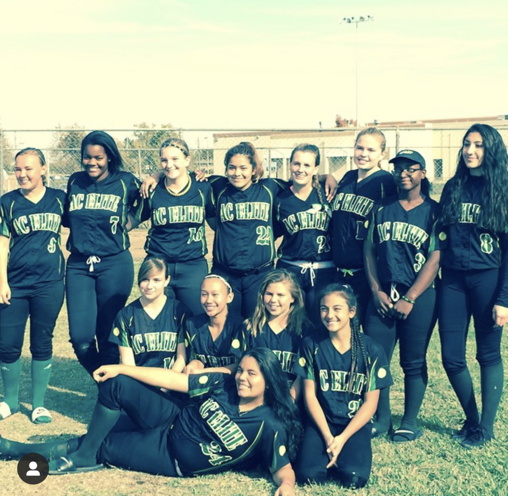

John Doe
My name is Katherine Montuya. I am a freshman in college at University of California Riverside. I play softball and I have played softball for almost ten years. I play softball in college at Riverside while pursuing a career in Business. I am a Pre Business major right now.
I have worked for two retail stores to help me get myself through college. At Marshalls, I was a cashier working on my people skills everyday at work. I would interact with a lot of people within a day. I had to help them with any problems they had which really helped me learn to explain solutions in great detail for people to really understand.
I also worked at Target as a Style Team Member. I worked mostly on the floor putting out merchandise for customers to purchase. I also worked on my people skills within the style department. I helped a lot of people locate items and help find something that would be the best fit for them. I learned a lot about time management with the Target job because I had responsibilities that I had to complete by the end of the day. I had to space out the workload that they gave me so that I could complete all of the tasks they expected me to complete.
My softball experiences have really helped me learn a lot about myself and how to handle people. People handle situations very differently under different amounts of pressure. I have learned how to deal with numerous amounts of people with different personalities. I have also been given opportunities to help coach younger girls playing softball. With my team captain experience all four years of high school, I was someone who they looked up to. This made me realize that people are watching you no matter where you are and what you are doing. I had set a really good example for them and I was able to help coach them. They were a really good set of softball players that I was very happy to teach. They all had good attitudes toward learning new things. However, I have found that older people do not thoroughly enjoy learning new tasks. Adults usually believe that they are right most of the time and are more prideful when it comes to asking for help I believe in always asking for help when you need it because it is never too late to learn something new in your life. I have used this mindset all through my past jobs and on other teams for softball. It has helped present me with a lot of new opportunities that help advance my career.
My attendance is something that has also been recognized by my peers and bosses. I will always show up and be there for the team. I have always been a team player and will always do what is best for the team. I believe in bettering yourself to better the entire group since the team is only as strong as the weakest player. I will do a lot for us to succeed and that is a trait that I will take with me everywhere. I have been a really reliable person for may people around me. I have been told that people did not expect me to be the person that I am, but I try my best everyday giving one hundred percent of whatever energy that I have.
Experience
Coaching Assistant
• Ran sessions to help players learn how to play
• Reviewed and helped girls throw
• Created motivational mindset
• Caught for over 100 pitchers
Education
University of California Riverside
Portfolio
